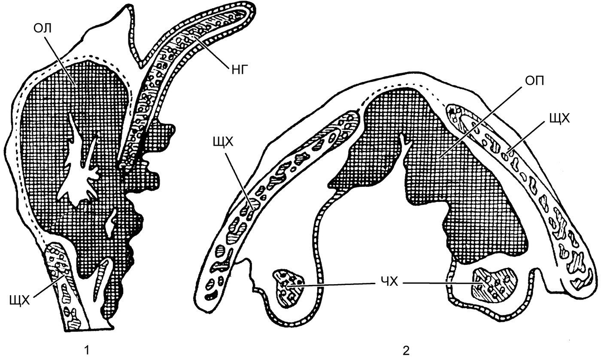
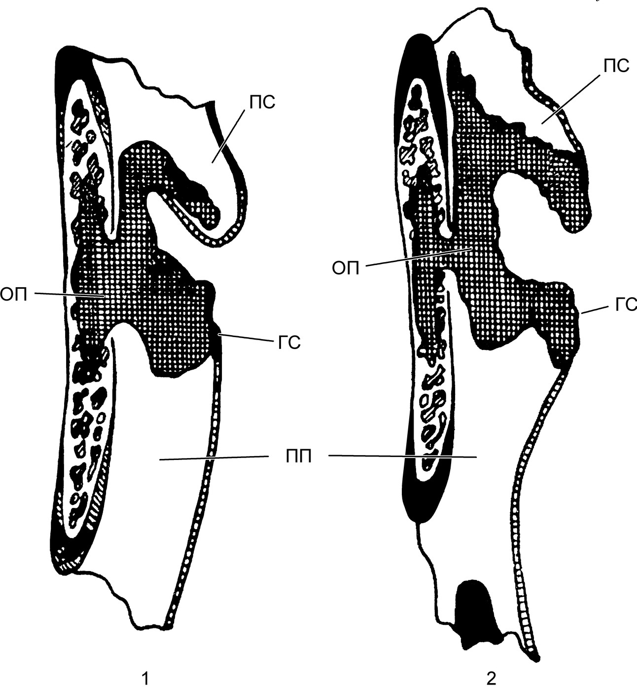
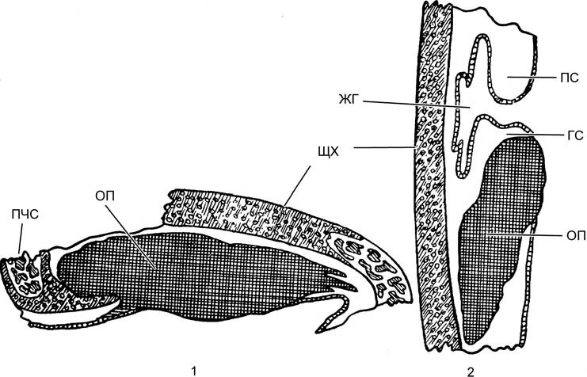
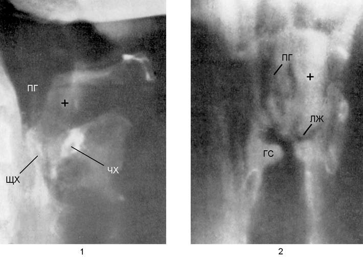
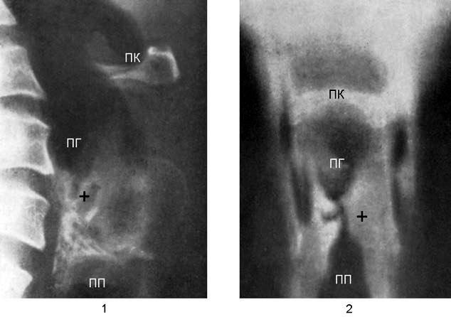

Рак и другие злокачественные опухоли гортани
Злокачественные опухоли гортани
Злокачественные опухоли гортани относятся к компетенции ЛОР-онкологов, специализирующихся именно в этой области онкологии. Задача оториноларинголога общей квалификации — руководствуясь принципом онкологической настороженности, знать проявления этих заболеваний, уметь заподозрить или распознать наличие опухоли и направить больного в специализированное лечебное учреждение.
Злокачественные опухоли гортани по отношению ко всем злокачественным опухолям в первой половине XX в. занимали по частоте седьмое место (Ch. Jackson). В СССР в тот же период количество случаев заболевания раком гортани составляло от 1 до 7% общего числа раковых опухолей. Частота заболевания раком гортани намного выше у мужчин (более 90%), заболевание обычно возникает в возрасте старше 40 лет и определяется в основном бытовыми и профессиональными вредностями (курение, алкоголизм, запыленность и загазованность производственных помещений, радиация). Саркома гортани наблюдается редко (от 1 до 2,3% случаев рака).
Рак гортани
Современные классификации рака гортани характеризуют локализацию, стадию развития и гистологическое строение опухоли. Плоскоклеточная форма рака обнаруживается в 95%, железистая — в 2%, базальноклеточная — в 2%, другие формы — в 1% (Ф. С. Бокштейн). По форме роста опухоли выделяют экзофитную (в полость гортани), эндофитную (в толщу тканей) и смешанную. По топографическому принципу рак гортани может быть классифицирован следующим образом: а) рак верхнего отдела гортани (вестибулярный рак, cancer supragloticum), локализующийся на задней поверхности надгортанника, в преднадгортанном пространстве, черпалонадгортанных складках и других отделах преддверия гортани; б) рак среднего отдела гортани (cancer gloticum), поражающий голосовые складки и область передней комиссуры; в) рак нижнего отдела гортани (cancer subgloticum), охватывающий ткани подскладочного пространства до нижнего края перстневидного хряща.

Вестибулярный рак, возникнув с одной стороны, очень быстро охватывает и противоположную сторону и прорастает в преднадгортанное пространство. Рак, возникающий в желудочках гортани, быстро пролабирует в просвет гортани, нарушая голосообразование и дыхание. Раки среднего отдела гортани являются наиболее частыми в начальной стадии, они локализуются исключительно на одной голосовой складке — cancer in situ. Вызываемые этой формой рака голосовые нарушения способствуют его ранней диагностике, следовательно и прогноз при этой форме наиболее благоприятный. Этому способствует и тот факт, что рак голосовой складки долгое время остается монолатеральным и очень поздно переходит на другие области гортани. Рак подскладочного пространства обычно растет инфильтративно и очень быстро распространяется напротивоположную сторону, поражая переднюю комиссуру и обе голосовые складки.

Нижняя граница рака подскладочного пространства чаще всего ограничена нижним краем щитовидного хряща, однако эта форма рака может спускаться до нижней границы перстневидного хряща, а в запущенных случаях — переходить на кольца трахеи.

Распространению рака гортани препятствуют стоящие на его пути преграды в виде связок и мышц гортани, а способствуют распространению лимфатические сосуды, которые, однако, тоже имеют барьер в виде голосовых складок, где они сильно редуцированы. Верхние надскладочные лимфатические сосуды связаны с анатомическими образованиями преддверия гортани (надгортанник, черпало надгортанные складки, морганиевы желудочки). Собирая лимфу из этих образований, лимфатические сосуды, пронизывая боковую часть щитоподъязычной мембраны, впадают в верхние яремные лимфоузлы, куда и заносят метастазы из соответствующих областей.
![Рис. 21.11. Общий план клинических форм рака гортани и метастазов в лимфатические узлы (по Bouchet et Huet): A — фронтальный разрез; B — горизонтальные разрезы на уровне преддверия (a), желудочков (b), голосовых складок (c), подскладочного пространства (d). Локализация опухоли: 1 — преддверная; 2 — желудочковая; 3 — голосовых складок; 4 — подскладочного пространства. Хрящи: 5 — щитовидный; 6 — перстневидный; 11 — черпаловидные. 10 — грушевидные синусы. Лимфатические узлы: 7 — верхние яремные; 8 — нижние яремные; 9 — предгортанные и узлы возвратного нерва; 12 — перстнечерпаловидная мембрана](img/tb-ogort-rak-formy.jpg)
Нижняя лимфатическая сеть обеспечивает сбор лимфы из анатомических образований подскладочного пространства; она образует два пути оттока: один из них (передний), пронизывая перстнещитовидную мембрану, впадает в пре- и пе ритрахеальные, а также нижние яремные лимфоузлы; другой путь (задний), пронизывая перстнетрахеальную мембрану, впадает в лимфоузлы возвратных нервов и отсюда — в нижние яремные узлы.
Срединная область лимфатической сосудистой сети представлена небольшим количеством очень тонких сосудов, располагающихся вдоль голосовых складок и слабо анастомозирующих с верхней и нижней лимфатическими сосудистыми сетями, что объясняет редкое и позднее метастазирование из этой области в названные лимфоузлы.

Метастазы в отдаленные органы — явление не столь частое: 4% — в легкие, 1,2% — в пищевод, печень, кости; еще реже — в желудок, кишечник и головной мозг.

Симптомы и клиническое течение. Характер клинических проявлений зависит от инвазивных свойств опухоли и ее стадии (распространенности). Опухоли в области преддверия вызывают ощущение инородного тела и при достижении определенных размеров (поражение надгортанника, черпалонадгортанных складок и грушевидных синусов) вызывают нарушение глотания и нарастающий болевой синдром. Опухоли подскладочного пространства в основном вызывают нарушение дыхания; при распространении вверх на область голосовых складок и черпаловидных хрящей возникает охриплость голоса и усиливается нарушение дыхательной функции.
Нарушения голоса. Опухоли в области голосовой щели рано вызывают явления голосовой дисфункции — фонастению, охриплость голоса, которые длительное время остаются единственными симптомами рака гортани. Отличительной особенностью охриплости голоса является ее постоянный, без ремиссий, характер, со временем голос становится тусклым вплоть до полной афонии. В это же время нарастает и затруднение дыхания в связи с распространением процесса на мышцы и суставы, обеспечивающие движения голосовых складок.
Дыхательные нарушения обычно наступают в более поздние сроки развития опухоли и развиваются постепенно, что длительное время обусловливает эффективную адаптацию организма к нарастающей гипоксической гипоксии. С нарастанием сужения дыхательного просвета гортани появляется одышка сначала при физических усилиях, а затем и в покое. На этой стадии возникает опасность острой асфиксии на почве различных факторов (простуда, отек слизистой оболочки, вторичная инфекция, последствия лучевой терапии). При раке голосовой складки нарушение дыхания возникает через месяцы или даже через один год после возникновения заболевания. Раньше эти нарушения возникают при раке подскладочного пространства; значительно позже, лишь при развитых формах, — при раке преддверия гортани. Шумное дыхание на вдохе характерно для опухолей подскладочного пространства.
Кашель является постоянным симптомом рака гортани и носит рефлекторный характер, иногда сопровождается приступами спазма гортани. Мокрота скудная, иногда с прожилками крови.
Болевой синдром характерен для опухолей, поражающих верхний отдел гортани, он появляется при распространенных процессах при распадающихся и изъязвляющихся опухолях. Боли иррадиируют в ухо и особенно мучительны при глотании, что заставляет больного отказываться от приема пищи. При развитых формах рака с поражением запирательной функции гортани возникает заброс пищи в гортань и трахею, что провоцирует приступы мучительного неукротимого кашля.
Общее состояние больного страдает лишь при распространенном раке: анемия, резкое похудание, быстрая утомляемость, выраженная общая слабость. Лицо бледное с желтоватым оттенком с выражением безысходности; в отличие от туберкулезной интоксикации, для которой характерна эйфория, при раке гортани больные впадают в состояние тяжелой депрессии.
Эндоскопическая картина характеризуется разнообразием как по форме, так и по локализации. Эпителиома голосовой складки в стадии дебюта — образование исключительно одностороннее, ограниченное лишь самой складкой, проявляющееся при экстенсивном росте в виде небольшого пролиферативного бугорка в передней трети голосовой складки или в области передней комиссуры. Исключительно редко первичный рак локализуется в задней части голосовой складки, там, где обычно образуются контактные гранулемы (апофиз голосового отростка черпаловидного хряща), или в области задней комиссуры. В иных случаях опухоль может иметь вид распространяющегося по голосовой складке образования красноватого цвета с бугорчатой поверхностью, выходящего за пределы срединной линии. В редких случаях опухоль имеет полипоидный вид, беловато-серую окраску и располагается чаще всего ближе к передней комиссуре.
Опухоли с инфильтративным ростом проявляются утолщением голосовой складки, приобретающей красноватый цвет, мягкой и легко разрушающейся, кровоточащей при зондировании пуговчатым зондом, с мелкобугорчатой поверхностью. Нередко такая форма изъязвляется и покрывается беловато-грязным налетом.
Подвижность голосовой складки при пролиферативных формах рака долгое время сохраняется при удовлетворительной, хотя и несколько измененной, голосовой функции, в то время как при инфильтративной форме голосовая складка быстро обездвиживается — и голос утрачивает характерную индивидуальность, становится хриплым, «расщепленным» и в дальнейшем полностью утрачивает свою тональность. При таких формах рака голосовой складки противоположная складка нередко приобретает вид, характерный для банального ларингита, что затрудняет диагноз и может направить диагностику по ложному пути. В таких случаях следует обращать внимание на асимметрию объемов голосовых складок, и если она заметна даже в незначительной степени, больного следует направить к ЛОР-онкологу.
В более продвинутых случаях опухоль поражает всю голосовую складку, голосовой отросток, распространяется в желудочек гортани и ниже, в подскладочное пространство. Она резко сужает дыхательную щель, глубоко изъязвляется и кровоточит.
Раковая опухоль с первичным проявлением в желудочке гортани поздно выходит за его пределы в просвет гортани либо в виде пролапса слизистой, покрывающей голосовую складку, либо в виде красноватого полипа, инфильтрирующего голосовую складку и стенки желудочка.
Опухоль подскладочного пространства, распространяясь снизу на нижнюю поверхность голосовой складки, покрывает ее и вызывает ее неподвижность, затем быстро изъязвляется и распространяется на черпалонадгортанную складку и грушевидный синус. Возникающий вторичный отек скрывает размеры опухоли и место ее первичного возникновения. В большинстве случаев при локализации опухоли в этой области наблюдаются достаточно развитые формы рака как пролиферативного, так и инфильтративного роста, причиняющие значительные разрушения и проникающие в преднадгортанное пространство. В этой стадии существенно страдает общее состояние больного (анемия, кахексия, общий упадок сил), имеются и метастазы в регионарные лимфоузлы. Первыми поражаются верхние яремные узлы, которые увеличиваются, сохраняют свою подвижность и безболезненны. Позже, сливаясь, лимфоузлы образуют плотные конгломераты, спаянные с оболочкой кивательной мышцы и гортанью. Прорастая окончания чувствительных нервов, в частности верхнего гортанного нерва, эти конгломераты становятся очень болезненными при пальпации, одновременно возникают спонтанные боли, иррадиирующие в соответствующее ухо. Таким же образом поражаются и другие лимфоузлы шеи, они распадаются с образованием свищей.
Рак гортани в нелеченных случаях в течение 1–3 лет приводит к смерти, однако отмечается и большая продолжительность течения этого заболевания. Обычно смерть наступает от удушья, профузных аррозивных кровотечений из крупных сосудов шеи, бронхолегочных осложнений, метастазов в другие органы и кахексии.
Диагностика. Своевременное распознавание рака гортани имеет большое значение для эффективного лечения этой болезни, поскольку на ранних стадиях возможно излечение. В отличие от опухолей, расположенных в преддверии гортани и подскладочном пространстве, которые развиваются в течение длительного периода при отсутствии симптомов, рак голосовой щели рано проявляется дисфонией, что при наличии онкологической настороженности может способствовать ранней диагностике в той стадии заболевания, когда минимальными хирургическими и дополнительными средствами возможно полное излечение.
Следует иметь в виду, что каждый мужчина в возрасте 35–40 лет, у которого возникла осиплость голоса неясной причины, длящаяся более 2–3 недель, должен быть осмотрен врачом. К таким же настораживающим признакам относятся «беспричинный» кашель, ощущение инородного тела в горле, незначительное нарушение глотания, боли в ухе при нормальной отоскопической картине, увеличение шейных лимфоузлов.
В основе диагностики лежат ларингоскопия (непрямая, прямая с использованием современных эндоскопических средств) и рентгенография; к дополнительным методам относится стробоскопия гортани, отображающая нарушение двигательной функции пораженной голосовой складки. Визуальные методы распознавания опухолей гортани эффективны лишь при поражении преддверия гортани и области голосовой щели. Для исследования подскладочного пространства, наряду с прямой фиброларингоскопией, широко применяют рентгенологические методы. Рентгенологическое исследование облегчается тем, что гортань, являясь полым органом с хорошо известными опознавательными признаками, доступна этому методу практически без контрастирования.
Саркома гортани
Встречается очень редко. По данным О. Мацкера (O. Matzker), до 1958 г. в мировой литературе было опубликовано всего 250 случаев этого заболевания, так что те 0,5% сарком среди всех злокачественных опухолей гортани, о которых говорили Леру-Робер (M. Leroux-Robert) и Пти (F. Petit), представляются значительно завышенными. По данным Н. Костинеску, за 15 лет (до 1964 г.) в руководимой им клинике был зарегистрирован всего один случай саркомы гортани.
В отличие от рака, который в подавляющем большинстве случаев возникает в возрасте старше 40 лет и преимущественно у мужчин, саркома гортани появляется у лиц моложе 20 лет и даже у детей, одинаково часто у мужчин и женщин. Чаще саркома локализуется на голосовых складках, где визуализируется в виде полипообразного образования на ножке. Далее по частоте локализации идут надгортанник, подскладочное пространство, желудочки гортани, черпаловидные хрящи. Саркома гортани может быть первичной или вторичной, распространяющейся из соседних анатомических образований (язык, глотка, трахея, щитовидная железа).
Гистологически различают фибросаркомы с веретенообразными клетками, ангиосаркомы, хондросаркомы, миксосаркомы, лимфосаркомы, ретикулосаркомы и меланосаркомы. Описаны случаи сочетания саркомы с раком гортани.
Симптомы идентичны наблюдаемым при раке, однако саркомам свойственно более быстрое и агрессивное развитие с ранним метастазированием, чем особенно отличаются лимфо-, ретикуло- и ангиосаркомы. Фибросаркомы обладают более медленным развитием, по своим клиническим проявлениям сходны с полипами голосовой складки, однако после инфильтрации окружающих тканей эволюционируют очень быстро и в течение нескольких месяцев достигают стадии неоперабельности с обширным метастазированием в лимфоузлы шеи, средостения и внутренних органов.
Диагностика основана, как правило, на биопсии и гистологическом исследовании.
Прогноз при злокачественных опухолях гортани зависит в основном от стадии заболевания и в меньшей степени — от применяемого лечения, поскольку в запущенных случаях даже при самом радикальном хирургическом лечении с последующей лучевой и химиотерапией рецидивы возникают в подавляющем большинстве случаев.
Источники
- Бабияк В. И., Накатис Я. А., Говорун М. И. Оториноларингология. Руководство. Т. 2. — СПб.: Питер, 2009. — Часть IV, гл. 21 «Опухоли гортани»: с. 218–227.
Раздел «Учебник» — справочная теория, не клинические рекомендации. Тактика ведения пациента — по разборам КР.